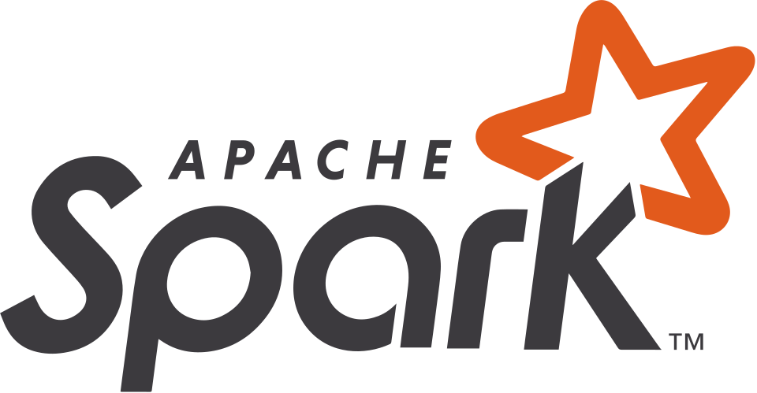

Data Engineer — Paris
Conception de pipelines de données robustes, architectures scalables et systèmes analytiques qui transforment les données brutes en intelligence fiable.
Voir les projets →À propos
Marc Kanani est un Data Engineer consultant basé à Paris, avec plus de 10 ans d'expérience dans la conception de plateformes de données. Spécialisé en ETL, Big Data et architectures cloud, avec une expertise profonde en Hadoop, Spark et GCP.
Diplômé d'un Master en Génie Logiciel de l'Université de Bordeaux (2016), certifié HDP (2017), Spark (2018) et Google Cloud Professional Data Engineer (2025). Il a collaboré avec de grands groupes : LVMH, BNP Paribas, Thales.
La qualité des données est son credo : tests automatisés systématiques, documentation complète à chaque livraison. Disponible pour des projets soirs et week-ends autour du Big Data, Hadoop et Cloud.
En dehors de la data, il peint à l'huile — une pratique qui a façonné sa façon de penser les couches, la patience et le moment où quelque chose est terminé.
En chiffres
10+
Années en data engineering
3
Certifications cloud & big data
Compétences techniques
Projets sélectionnés
01
Migration HDFS → S3 & Modernisation Plateforme Data
Migration complète de la plateforme data vers le cloud : passage de HDFS vers S3, industrialisation des workflows de Jenkins vers Airflow, transformation des pipelines avec dbt dans un environnement Cloudera Data Platform. Mission en cours chez Thales Services Numériques.
02
Solution Big Data — Analyse de Transactions Client
Mise en œuvre d'une solution Big Data complète chez Keyrus : évaluation de NiFi, streaming Kafka/Flink, CI/CD GitLab, déploiement IBM Cloud Kubernetes, stockage COS et MongoDB, monitoring ELK, connecteur MongoDB for BI pour Tableau.
03
Ingestion de données COVID-19 — Ministère de l'Intérieur
Mission ATOS : flux NiFi pour l'ingestion de données COVID-19, développement de pipelines Spark, ordonnancement avec Argo Workflows, monitoring des traitements, déploiement sur Kubernetes et AWS S3.
04
Dashboards & Datamart LVMH/PCIS
Mission ATOS pour LVMH/PCIS : recueil des besoins, prototypage de tableaux de bord, migration de données blob vers Azure Cloud, préparation de datamarts, développement de dashboards Qlik Sense, optimisation des scripts et automatisation du chargement.
Expérience
Thales Services Numériques (Beteam) · Paris
Consultant Senior Data Engineer spécialisé dans la transformation des données, support d'équipes et leadership technique en environnements Data & Cloud. Migration HDFS → S3, Jenkins → Airflow, pipelines dbt, monitoring Kibana, partage sécurisé GPG/SSH.
Keyrus · Paris (client : BNP Paribas)
Mission de conseil chez BNP Paribas : solution Big Data pour l'analyse de transactions clients : NiFi, Kafka/Flink, CI/CD GitLab, IBM Cloud Kubernetes, stockage COS et MongoDB, monitoring ELK.
Atos · Paris (Édition de logiciels — Alien4Cloud)
Projet Alien4Cloud : conception et développement de plugins Java Spring Boot pour l'intégration de composants Kubernetes dans la plateforme de gestion du cycle de vie applicatif. Modernisation de l'interface graphique et tests fonctionnels.
Atos · Paris (Ministère de l'Intérieur)
Flux NiFi COVID-19, pipelines Spark, ordonnancement Argo Workflows, monitoring, déploiement Kubernetes et AWS S3.
Atos · Paris (LVMH / PCIS)
Recueil des besoins, dashboards Qlik Sense, migration Azure Cloud, préparation de datamarts, optimisation des scripts, automatisation du chargement.
Certifications
MapR Technologies (acquis par Hewlett Packard Enterprise)

Contact
Disponible pour des missions de conseil en architecture et des projets ambitieux autour du Big Data et du Cloud.
contact@marckanani.fr